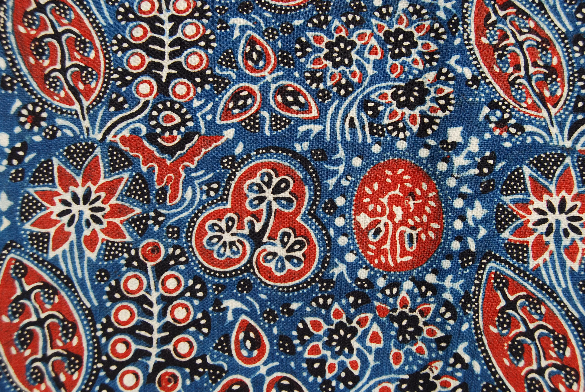
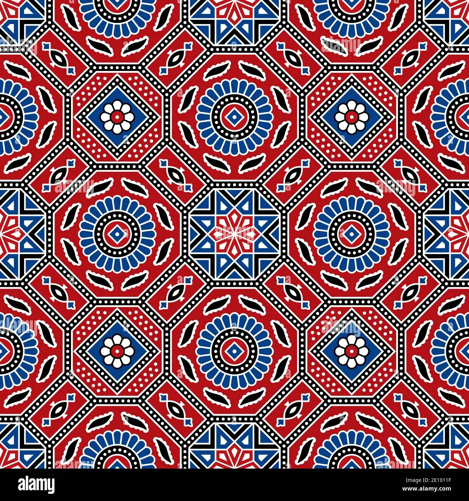
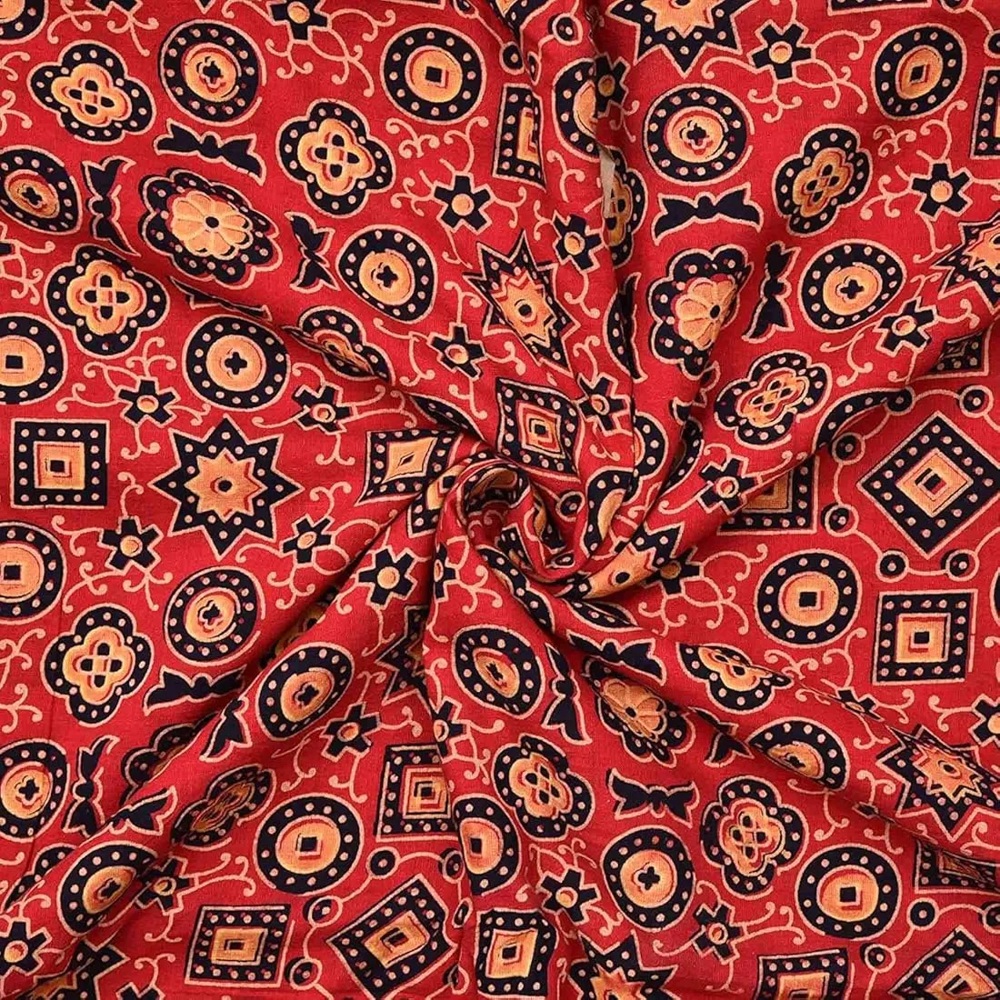
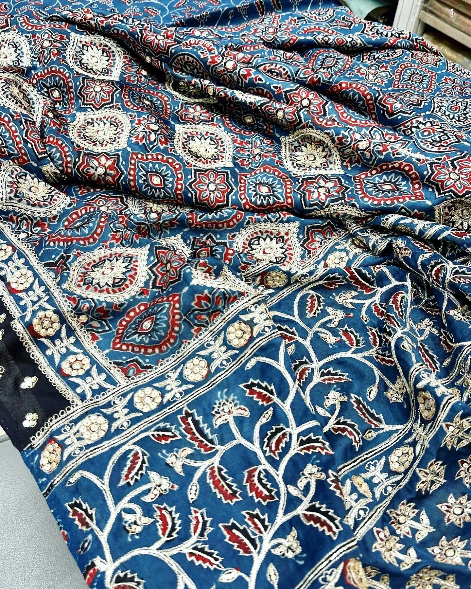

Overview
Ajrakh is an ancient block printing technique believed to be over 4000 years old. The name

History
The Khatri community brought Ajrakh printing to Kutch from Sindh (now in Pakistan) around 400 years ago. The craft has been passed down through generations, with each family developing their unique style. Ajrakh fabrics were historically worn by pastoral communities and became an integral part of Kutchi identity.
Technique
Ajrakh printing is one of the most complex textile techniques, involving 16 stages of washing, dyeing, and printing. The fabric undergoes multiple rounds of resist printing using wooden blocks carved with intricate designs. Natural dyes like indigo, madder root, and iron rust create the characteristic colors. The entire process can take up to a month for a single piece.
Cultural Significance
Ajrakh represents the cultural heritage of Kutch
Traditional Patterns
- •Indigo blue base with red and white motifs
- •Geometric star patterns (representing cosmos)
- •Floral medallions
- •Wave patterns (symbolizing water)
- •Tree of Life designs
- •Border patterns with intricate details
Colors & Natural Dyes
The classic Ajrakh palette includes deep indigo blue, rich red from madder root, and black from iron rust. Modern artisans also experiment with natural dyes to create green, yellow, and brown variations, all derived from plants and minerals.
How to Identify Authentic Ajrakh
- •Look for precise geometric patterns on both sides of fabric
- •Check for natural dye variations - each piece is unique
- •Authentic Ajrakh has a distinct earthy smell from natural dyes
- •The fabric should be printed on both sides
- •Look for slight irregularities in block alignment - sign of handwork
Buying Tips
- •Visit Ajrakhpur village for authentic pieces
- •Check if natural dyes were used - ask the artisan
- •Look for GI (Geographical Indication) tags
- •Higher thread count fabric commands premium prices
- •Buy directly from artisans when possible
- •Be patient - quality Ajrakh is never rushed
Price Range
₹800 - ₹15,000 per meter depending on fabric quality, intricacy, and whether natural dyes were used. Authentic hand-block printed Ajrakh with natural dyes commands premium prices.
Did You Know?
A single Ajrakh piece requires at least 16 different stages
The craft uses only natural materials - no chemicals
Wooden printing blocks can last for generations
One meter of fabric is washed up to 14 times during the process
The indigo dye fermentation process takes several days
UNESCO has recognized Ajrakh as intangible cultural heritage
Gallery


